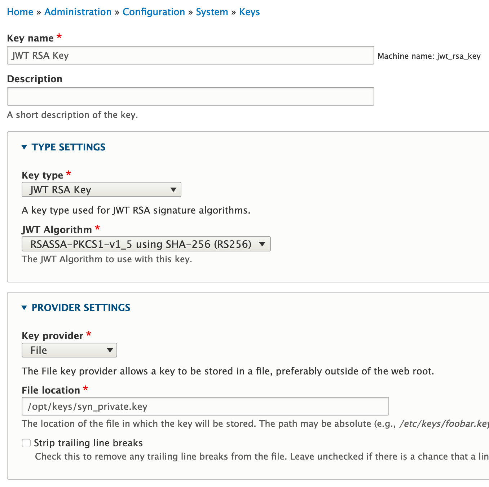
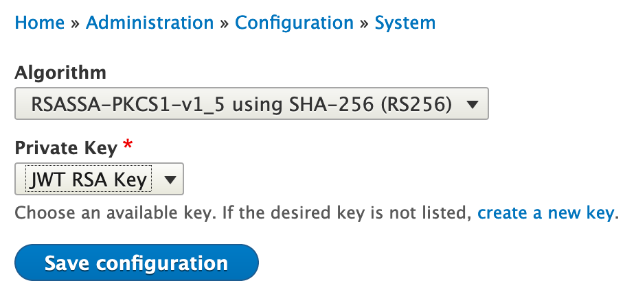
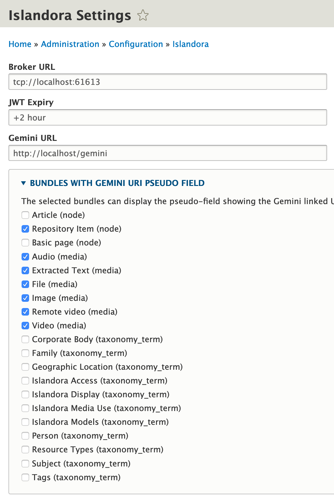
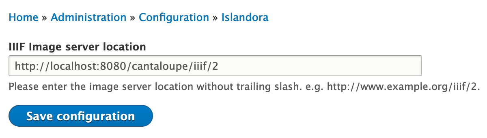
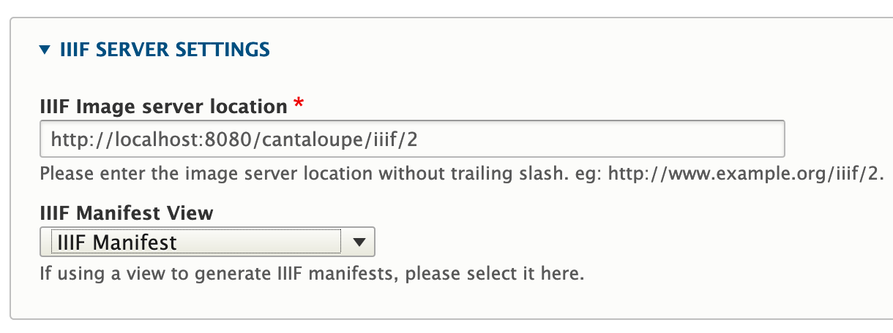
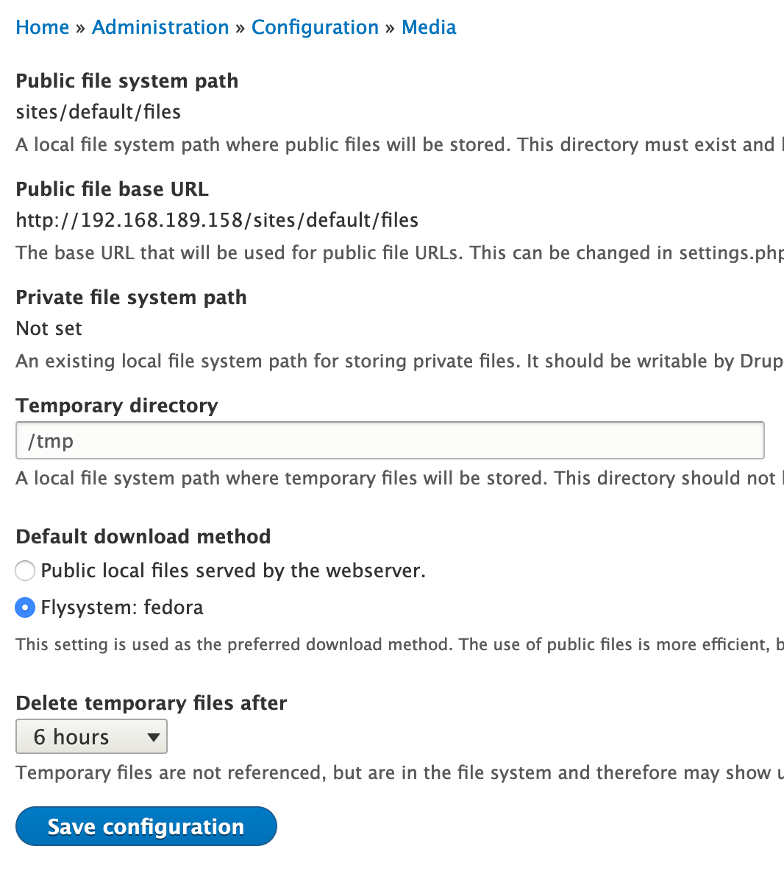

Configuring Drupal¶
Needs Maintenance
The manual installation documentation is in need of attention. We are aware that some components no longer work as documented here. If you are interested in helping us improve the documentation, please see Contributing.
After all of the above pieces are in place, installed, configured, started, and otherwise prepared, the last thing we need to do is to finally configure the front-end Drupal instance to wire all the installed components together.
Drupal Pre-Configuration¶
settings.php¶
Notice
By default, settings.php is read-only for all users. It should be made writable while this pre-configuration is being done, then set back to 444 afterwards.
Some additional settings will need to be established in your default settings.php before Drupal-side configuration can occur.
The below configuration will establish localhost as a trusted host pattern, but on production sites this will need to be expanded to include the actual host patterns used by the site.
/opt/drupal/web/sites/default/settings.php
Before (at around line 789):
After:
'driver' => 'mysql',
);
$settings['trusted_host_patterns'] = [
'localhost',
];
$settings['flysystem'] = [
'fedora' => [
'driver' => 'fedora',
'config' => [
'root' => 'http://localhost:8080/fcrepo/rest/',
],
],
];
Once this is done, refresh the cache to take hold of the new settings.
Islandora¶
Skip this by using the Islandora Starter Site
The Islandora Starter Site, which was presented as an option in the "Installing Composer, Drush, and Drupal" step, installs Islandora and other modules and configures them, allowing you to skip this section. You may want to use this manual method in the case where you want to pick and choose which Islandora modules you use.
Downloading Islandora¶
The Islandora Drupal module contains the core code to create a repository ecosystem in a Drupal environment. It also includes several submodules; of importance to us is islandora_core_feature, which contains the key configurations that allow you to use Islandora features.
Take note of some of the other comments in the below bash script for an idea of what the other components are expected, and which may be considered optional.
cd /opt/drupal
# Since islandora_defaults is near the bottom of the dependency chain, requiring
# it will get most of the modules and libraries we need to deploy a standard
# Islandora site.
sudo -u www-data composer require "drupal/flysystem:^2.0@alpha"
sudo -u www-data composer require "islandora/islandora:^2.4"
sudo -u www-data composer require "islandora/controlled_access_terms:^2"
sudo -u www-data composer require "islandora/openseadragon:^2"
# These can be considered important or required depending on your site's
# requirements; some of them represent dependencies of Islandora submodules.
sudo -u www-data composer require "drupal/pdf:1.1"
sudo -u www-data composer require "drupal/rest_oai_pmh:^2.0@beta"
sudo -u www-data composer require "drupal/search_api_solr:^4.2"
sudo -u www-data composer require "drupal/facets:^2"
sudo -u www-data composer require "drupal/content_browser:^1.0@alpha" ## TODO do we need this?
sudo -u www-data composer require "drupal/field_permissions:^1"
sudo -u www-data composer require "drupal/transliterate_filenames:^2.0"
# These tend to be good to enable for a development environment, or just for a
# higher quality of life when managing Islandora. That being said, devel should
# NEVER be enabled on a production environment, as it intentionally gives the
# user tools that compromise the security of a site.
sudo -u www-data composer require drupal/restui:^1.21
sudo -u www-data composer require drupal/console:~1.0
sudo -u www-data composer require drupal/devel:^2.0
sudo -u www-data composer require drupal/admin_toolbar:^2.0
Enabling Downloaded Components¶
Components we've now downloaded using composer require can be enabled simultaneously via drush, which will ensure they are installed in the correct dependent order. Enabling islandora_defaults will also ensure all content types and configurations are set up in Islandora. The installation process for all of these modules will likely take some time.
Notice
This list of modules assumes that all of the above components were downloaded using composer require; if this is not the case, you may need to pare down this list manually. It also includes devel, which again, should not be enabled on production sites.
cd /opt/drupal
drush -y en rdf responsive_image devel syslog serialization basic_auth rest restui search_api_solr facets content_browser pdf admin_toolbar controlled_access_terms_defaults islandora_breadcrumbs islandora_iiif islandora_oaipmh
# After all of this, rebuild the cache.
drush -y cr
Adding a JWT Configuration to Drupal¶
To allow our installation to talk to other services via Syn, we need to establish a Drupal-side JWT configuration using the keys we generated at that time.
Log onto your site as an administrator at /user, then navigate to /admin/config/system/keys/add. Some of the settings here are unimportant, but pay close attention to the Key type, which should match the key we created earlier (an RSA key), and the File location, which should be the ultimate location of the key we created for Syn on the filesystem, /opt/keys/syn_private.key.

Click Save to create the key.
Once this key is created, navigate to /admin/config/system/jwt to select the key you just created from the list. Note that before the key will show up in the Private Key list, you need to select that key's type in the Algorithm section, namely RSASSA-PKCS1-v1_5 using SHA-256 (RS256).

Click Save configuration to establish this as the JWT key configuration.
Configuring Islandora¶
Navigate to the Islandora core configuration page at /admin/config/islandora/core to set up the core configuration to connect to Gemini. Of note here, the Gemini URL will need to be established to facilitate the connection to Fedora, and the appropriate Bundles with Gemini URI pseudo field types will need to be checked off.
Notice
Any other Drupal content types you wish to synchronize with Fedora should also be checked off here.

Configuring Islandora IIIF¶
Navigate to /admin/config/islandora/iiif to ensure that Islandora IIIF is pointing to our Cantaloupe server.

Next, configure OpenSeadragon by navigating to /admin/config/media/openseadragon and ensuring everything is set up properly.

Establishing Flysystem as the Default Download Method¶
Navigate to /admin/config/media/file-system to set the Default download method to the one we created in our settings.php.

Giving the Administrative User the fedoraAdmin Role¶
In order for data to be pushed back to Fedora, the site administrative user needs the fedoraAdmin role.
Running Feature Migrations¶
Finally, to get everything up and running, run the Islandora Core Features and Islandora Defaults migrations.
Enabling EVA Views¶
Some views provided by Islandora are not enabled by default.